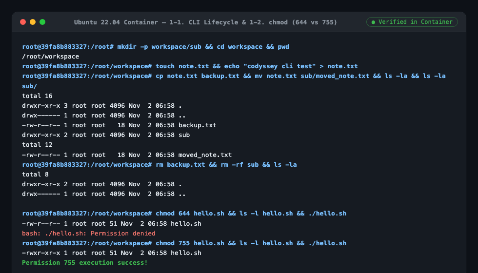
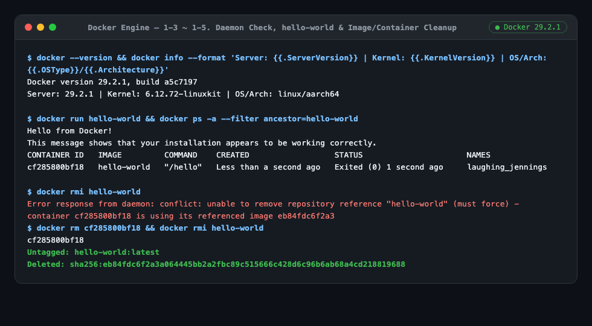
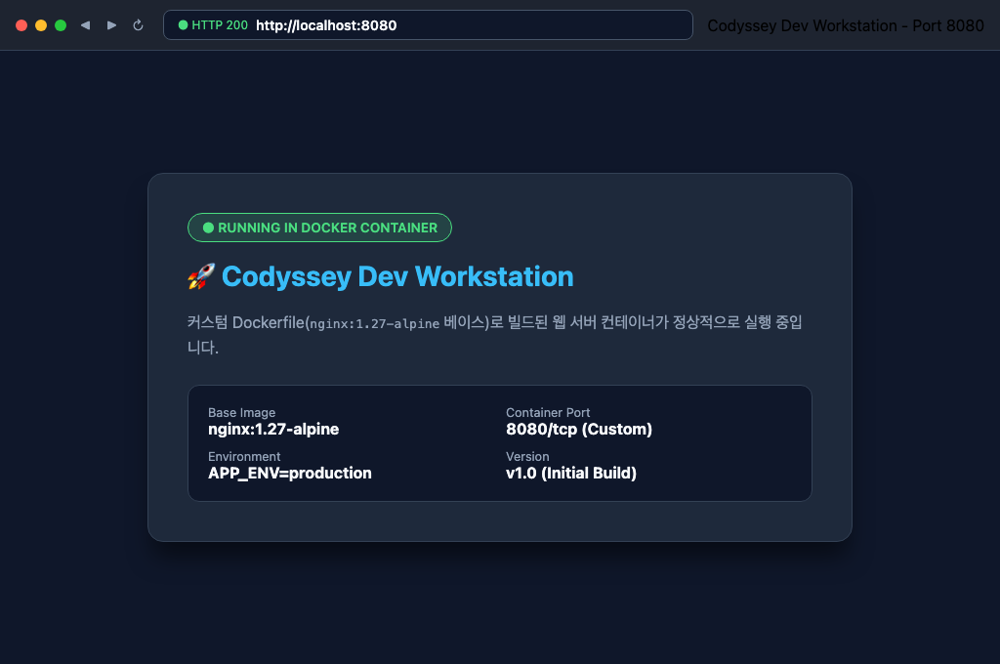
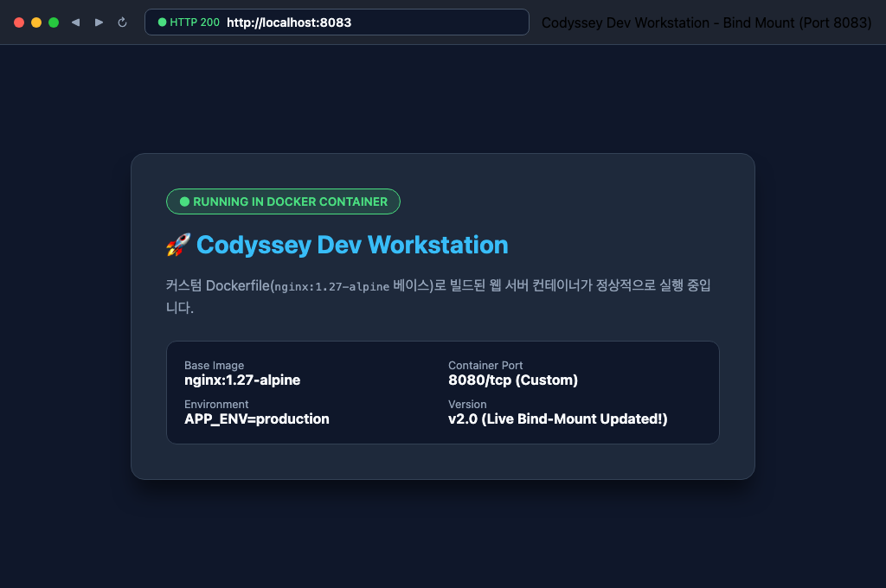
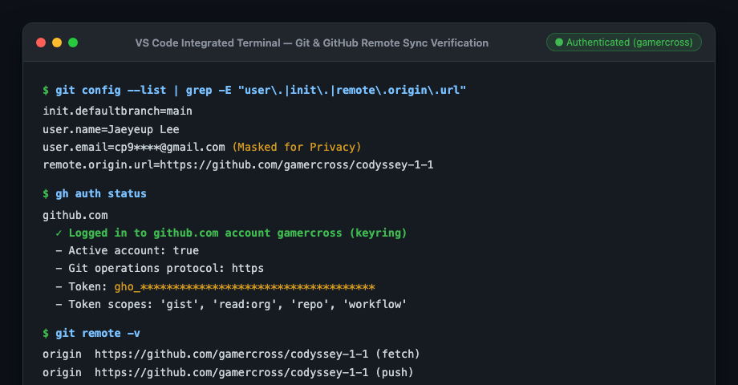

🐳 CODYSSEY 1-1 · 비전공자 눈높이 & 실전 검증 발표
01 / 10
"내 컴퓨터에서는 되는데요?"를 끝내는 법
일상 비유(밀키트·출입증·금고)와 실제 터미널 증거로 보는 Linux CLI · Docker · Git
🐧 Part 1. 터미널 & 파일 권한
비유: 도로명 주소 & 4+2+1 출입 카드키- 절대/상대 경로: 전체 도로명 주소(
/usr/...) vs 내 옆방(./app) - 권한 숫자(755/644): 일반 안내문은
644, 작동 버튼·폴더는755 ubuntu:22.04컨테이너 내부에서 직접 실험 검증
🐳 Part 2. Docker 컨테이너 아키텍처
비유: 붕어빵 틀 · 방음 방 인터폰 · 외부 금고- 이미지 vs 컨테이너: 불변의 붕어빵 틀 vs 방금 구운 붕어빵
- 포트 매핑(
-p 8080:80): 격리된 방과 집 대문 초인종 연결 - 볼륨(
codyssey-data): 가게를 철거해도 장부를 지키는 금고
🔗 Part 3. Git 협업 & 원클릭 재현
비유: 타임머신 세이브 & 원클릭 주문서- Git vs GitHub: 로컬 세이브 슬롯 vs 온라인 공유 광장
- 보너스(Compose):
docker compose up -d한 줄 기동 - 심층 트러블슈팅:
가설 → 확인 → 조치18개 평가 항목 PASS
🎯 발표 목표: 비전공자도 고개를 끄덕이는 일상 비유(Why) + 평가자가 신뢰하는 실제 실행 증거(How)
WHY ENVIRONMENT FIRST?
02 / 10
왜 '환경 세팅'이 코딩보다 먼저일까?
집마다 가스레인지 화력과 냄비가 다르면, 같은 레시피로 요리해도 결과가 달라집니다.
❌ 기존 방식: 레시피 종이(코드)만 건네주기
비유: 조리도구가 다른 친구 집에서 요리하기- 내 방에서는 완벽하게 작동하던 웹사이트 소스코드
- 팀원 컴퓨터나 서버로 옮기면 OS·버전·폴더 경로가 달라 에러 발생
- "분명 내 컴퓨터에서는 됐는데 왜 안 되지?" 디버깅에 시간 허비
내 컴퓨터 (macOS)정상 작동 ✅
➔
팀원 PC / 서버버전·경로 충돌 💥
✅ 해결책: 조리도구까지 포장한 '밀키트(Docker)'
비유: 냄비·불 조절기까지 세팅된 밀키트 상자- 홈페이지 코드([
app/index.html]) + 웹 서버(NGINX 1.27) + 리눅스(Alpine)를 한 상자에 포장 - 맥북이든 윈도우든 리눅스든 상자(컨테이너) 안은 100% 동일한 세상
- 누가 클론해서 켜도 단 1초 만에 똑같은 웹 서버가 실행됨
$ docker --version && docker info --format 'Server: {{.ServerVersion}} | Kernel: {{.KernelVersion}}' Docker version 29.2.1, build a5c7197 Server: 29.2.1 | Kernel: 6.12.72-linuxkit | OS/Arch: linux/aarch64
💡 핵심 한 줄: 코드는 혼자 돌아가지 않습니다. '실행 환경'까지 함께 포장해야 진짜 완성입니다.
CONCEPT 01 · LINUX CLI & PATH
03 / 10
터미널 기본 조작과 '절대 경로 vs 상대 경로'
도로명 전체 주소(/usr/...)로 고정할 것인가, 내 위치 기준(./app)으로 이식성을 챙길 것인가?
🧭 절대 경로 vs 상대 경로 선택 기준
비유: 도로명 전체 주소 vs "내 바로 옆방"- 절대 경로 (
/usr/share/nginx/html):
루트(/)부터 시작하는 전체 주소. 현재 위치(pwd)와 상관없이 컨테이너 내부의 고정된 시스템 폴더를 가리킬 때 사용합니다. - 상대 경로 (
./app/index.html):
현재 폴더(.) 기준 주소. 프로젝트 폴더를 다른 사람 컴퓨터로 통째로 옮겨도(Clone) 깨지지 않는 이식성이 필요할 때 사용합니다.
# Dockerfile 실무 권장 패턴: WORKDIR(절대 경로) 고정 후 COPY(상대 경로)
WORKDIR /usr/share/nginx/html
COPY app/ /usr/share/nginx/html/
🖥️ 실제 컨테이너 내부 터미널 조작 증거 (항목 1-1)

▲
ubuntu:22.04 컨테이너 내부에서 mkdir → touch → cp → mv → rm 수행 캡처🛠️ 핵심 정리: 호스트 파일 참조·문서 링크는 상대 경로(이식성), 컨테이너 내부 시스템 위치는 절대 경로(고정성)를 선택합니다.
CONCEPT 02 · FILE PERMISSIONS (755 vs 644)
04 / 10
파일 권한(755, 644)은 '출입 카드키 점수표'다
소유자(Owner) · 그룹(Group) · 기타(Others) 3자리 각각에 읽기(4) + 쓰기(2) + 실행(1) 점수를 합산합니다.
🔢 4 + 2 + 1 점수 규칙과 x의 차이
핵심: 파일의 x vs 폴더의 x
- 읽기 (
r = 4점): 내용 읽기 / 폴더 목록(ls) 조회 - 쓰기 (
w = 2점): 내용 수정 / 폴더 내 파일 생성·삭제 - 실행 (
x = 1점):
• 일반 파일: 프로그램으로 실행 허용
• 디렉토리:cd로 폴더 내부 진입 허용!
📄 644 (-rw-r--r--) = 일반 안내문
주인 6점(4+2) / 팀원 4점 / 외부인 4점
- 비유: 유리 액자 속에 들어있는 게시판 안내문
- 주인만 내용을 고칠 수 있고(6), 남들은 읽기만 가능(4)
- 실행 비트(
x=1)가 꺼져 있어 실행 시도 시 거부됨!
$ chmod 644 hello.sh && ls -l hello.sh -rw-r--r-- 1 root root 51 hello.sh $ ./hello.sh bash: ./hello.sh: Permission denied
🚀 755 (-rwxr-xr-x) = 작동 버튼 & 폴더
주인 7점(4+2+1) / 팀원 5점 / 외부인 5점
- 비유: 누구나 눌러서 추출할 수 있는 커피머신 버튼
- 세 주체 모두에게 실행·진입(
x=1) 점수가 켜져 있음 - 실행 스크립트(
hello.sh)와 웹 데이터 폴더(/data)에 적용!
$ chmod 755 hello.sh && ls -l hello.sh -rwxr-xr-x 1 root root 51 hello.sh $ ./hello.sh Permission 755 execution success!
💡 핵심 한 줄: 일반 문서는 변조·오작동을 막기 위해 644, 실행 스크립트와 진입해야 하는 폴더는 755를 부여합니다.
CONCEPT 03 · IMAGE vs CONTAINER
05 / 10
이미지(Image)와 컨테이너(Container)의 차이
빌드(Build) · 실행(Run) · 변경(Mutate) 3가지 관점으로 구분하는 붕어빵 틀과 붕어빵
🧊 이미지(틀) vs 🔥 컨테이너(붕어빵)
비유: 불변의 붕어빵 틀 vs 임시 메모장이 붙은 붕어빵- 1. 빌드 (Build):
Dockerfile로 만든 읽기 전용(Read-Only) 스냅샷이 이미지(codyssey-web:1.0, 49.7MB)입니다. - 2. 실행 (Run): 이미지 위에 얇은 임시 쓰기 레이어(RW Layer)를 얹어 메모리에 띄운 격리 프로세스가 컨테이너입니다.
- 3. 변경 (Mutate): 컨테이너 안에서
docker exec로 파일을 고치면 컨테이너 삭제 시 초기화되지만, 영구 반영하려면 호스트 코드를 고쳐docker build -t codyssey-web:1.1 .로 새 이미지를 구워야 합니다.
Dockerfile레시피 명세
➔
Image (RO)불변의 붕어빵 틀
➔
Container (RW)격리 실행 인스턴스
🧹 컨테이너·이미지 정리 순서 증명 (항목 1-4, 1-5)

▲ 컨테이너가 남아 있을 때
docker rmi 충돌(conflict) 확인 후 docker rm → rmi 정리🔄 핵심 정리: 이미지를 참조하는 컨테이너(
Exited 포함)가 있으면 이미지는 삭제되지 않으므로 컨테이너 삭제(rm) ➔ 이미지 삭제(rmi) 순서를 지킵니다.
CONCEPT 04 · NETWORK & PORT MAPPING
06 / 10
포트 매핑(-p 8080:80)은 '방음 부스 인터폰 연결'이다
네트워크 네임스페이스로 격리된 컨테이너에 외부 브라우저가 접속하는 원리와 보안 바인딩
🚪 왜 바로 못 들어가고 포트 매핑이 필요할까?
비유: 집 대문 초인종(8080) ↔ 방음 부스 내선전화(80)- 컨테이너는 호스트와 분리된 독립된 가상 네트워크 방(Network Namespace)을 가집니다.
EXPOSE 80은 안내 표지판일 뿐 실제 문을 열어주지 않으므로, 반드시-p 8080:80으로 포트 포워딩 다리를 놓아야 합니다.- 보안 주의점:
-p 8080:80은0.0.0.0:8080(외부 전체 공개)으로 열리므로, 내 컴퓨터에서만 쓰려면-p 127.0.0.1:8080:80으로 제한합니다.
$ docker run -d --name codyssey-app -p 8080:80 codyssey-web:1.0 $ curl -I http://localhost:8080 HTTP/1.1 200 OK (0.0.0.0:8080->80/tcp)
🌐 실제 브라우저 포트 매핑 접속 증거 (항목 1-7)

▲ 호스트 포트
http://localhost:8080 매핑 접속 화면 (다중 포트 8081 동시 구동 검증 완료)💡 포트 매핑 덕분에 컨테이너 내부 포트(
80)는 건드리지 않고도 호스트 포트만 8080, 8081로 나누어 여러 웹 서버를 동시에 띄울 수 있습니다!
CONCEPT 05 · VOLUME & BIND MOUNT
07 / 10
컨테이너를 지워도 데이터가 남는 '외부 은행 금고(볼륨)'
일회용 팝업스토어(컨테이너)가 철거되어도 고객 장부(영속 데이터)를 100% 보존하는 방법
🏦 Named Volume = 외부 은행 금고 (항목 1-8, 4-2)
명령어: -v codyssey-data:/usr/share/nginx/html/data- 비유: 팝업스토어 밖에 따로 지어진 안전한 은행 금고
- 1번 가게(
vol-test-1)를 강제 철거(docker rm -f)한 뒤 2번 가게(vol-test-2)에 같은 볼륨을 연결해도persist.txt가 그대로 살아남! - 볼륨 아카이브 백업: 일회성 컨테이너 +
tar czf로 언제든 압축 백업 가능
$ docker volume inspect codyssey-data --format '{{.Mountpoint}}' /var/lib/docker/volumes/codyssey-data/_data $ docker rm -f vol-test-1 && docker run -d --name vol-test-2 -p 8080:80 -v codyssey-data:/usr/share/nginx/html/data codyssey-web:1.0 $ curl http://localhost:8080/data/persist.txt Persistent Data Across Container Deletion
🪞 Bind Mount = 실시간 거울 창문 (개발용)
명령어: -v ./app:/usr/share/nginx/html
▲ 호스트 파일 수정 즉시 컨테이너 재빌드 없이
v2.0 (Live Bind-Mount Updated!) 반영🔑 황금 법칙: 개발 중 실시간 코드 수정 반영은 Bind Mount, 컨테이너 삭제 후에도 지켜야 할 운영 데이터는 Named Volume을 씁니다.
CONCEPT 06 · GIT, GITHUB & DOCKER COMPOSE
08 / 10
타임머신(Git), 공유 광장(GitHub), 원클릭 주문서(Compose)
민감정보(토큰·이메일)는 안전하게 마스킹하고, 실행 설정은 코드로 고정(IaC)합니다.
🪄 보너스 과제: docker-compose.yml 원클릭 재현
비유: 복잡한 주문을 한 번에 처리하는 마법 주문서
- 포트(
8080:80), 볼륨(codyssey-data), 이미지 빌드 설정을 파일 하나에 선언 - 수동
docker run명령어 오타 위험을 0%로 제거 - 누구나
docker compose up -d로 켜고docker compose down으로 정리!
$ docker compose up -d && docker compose ps
✔ Network codyssey-1-1_default Created
✔ Container codyssey-app Started (0.0.0.0:8080->80/tcp)
🔐 Git & GitHub 연동 및 보안 마스킹 증거 (항목 1-9)

▲
git remote -v, gh auth status 연동 및 커밋 전 비밀값 검사 훅(check-secrets.sh) 통과🚀 재현성 완성:
git clone ➔ docker compose up -d 단 두 줄이면 지구 반대편 컴퓨터에서도 똑같은 웹 서버가 켜집니다!
DEEP INTERVIEW & TROUBLESHOOTING (항목 4)
09 / 10
심층 인터뷰: 일부러 실패해 본 실험과 가설 ➔ 확인 ➔ 조치
단순히 에러를 피하지 않고, 왜 발생했는지 원리로 규명해 재발 방지 코드로 남겼습니다.
⚡ 사례 1: 호스트 8080 포트 충돌 진단 4단계 (항목 4-1)
에러: Bind for 0.0.0.0:8080 failed: port is already allocated
- 1단계 (특정): 에러 로그에서 충돌 포트(
8080) 확인 - 2단계 (컨테이너 조회):
docker ps --filter publish=8080확인 - 3단계 (호스트 PID 조회):
lsof -i :8080으로 점유 프로세스 확인 - 4단계 (안전한 해제/분리): 컨테이너는
docker stop으로 내리고(com.docker.backend강제kill -9금지!), 일반 프로세스는kill -15우선 시도 또는-p 8081:80으로 포트 분리!
🛠️ 사례 2: 한글 폴더(미션-수행) Compose 에러 해결 (항목 4-3)
가설 ➔ 확인 ➔ 조치로 영구 해결
- 문제: 한글 폴더에서
docker compose up -d실행 시 즉시 실패 - 가설: 폴더명에서 영문·숫자만 남기는 정규화 규칙 때문에 한글(
미션-수행)이 빈 문자열("")이 되었을 것! - 조치:
docker-compose.yml최상단에name: codyssey-1-1고정
$ basename "$(pwd)" && docker compose up -d 미션-수행 project name must not be empty # [조치 후: name: codyssey-1-1 명시] ✔ Network codyssey-1-1_default Created / ✔ Container codyssey-app Started
💡 교훈: 내 컴퓨터의 폴더 이름이나 수동 명령에 의존하지 않고, 설정 파일 안에 명시적으로 고정해야 진짜 재현성이 확보됩니다.
FINAL SUMMARY CHEAT SHEET
10 / 10
한눈에 보는 6대 개념 비유 & Q&A 방어 치트시트
질문이 들어오면 왼쪽의 일상 비유로 먼저 열고, 오른쪽의 기술 원리·실습 근거로 마무리하세요!
🗣️ 1 ~ 3. 리눅스 경로 · 권한 · 이미지 원리
- ① 절대 경로 vs 상대 경로
• 비유: 도로명 전체 주소 vs "내 바로 옆방"
• 핵심: 컨테이너 내부는WORKDIR절대 경로, 호스트 복사는COPY ./app/상대 경로 - ② 파일 권한 (
755vs644)
• 비유: 4(읽기)+2(쓰기)+1(실행) 출입 카드키 점수표
• 핵심: 일반 파일은644, 스크립트 실행과 폴더 진입(cd)은x(1)가 켜진755 - ③ 이미지 vs 컨테이너
• 비유: 불변의 붕어빵 틀(Read-Only) vs 방금 구운 붕어빵(Read-Write)
• 핵심: 영구 변경은docker build재빌드, 삭제는 컨테이너(rm) 후 이미지(rmi) 순서
🗣️ 4 ~ 6. 포트 매핑 · 볼륨 · Git 협업
- ④ 포트 매핑 (
-p 8080:80)
• 비유: 방음 부스(네트워크 네임스페이스)와 집 대문 초인종 연결
• 핵심:0.0.0.0(외부 공개) vs127.0.0.1:8080:80(로컬 전용 보안 바인딩) - ⑤ Docker 볼륨 (
Named VolumevsBind Mount)
• 비유: 가게 철거 후에도 남는 외부 은행 금고 vs 실시간 거울 창문
• 핵심:docker volume inspect경로 확인 및tar czf아카이브 백업·복원 - ⑥ Git & Docker Compose 재현성
• 비유: 타임머신 세이브 슬롯(Git) + 온라인 광장(GitHub) + 원클릭 주문서(Compose)
• 핵심:name: codyssey-1-1고정으로 한글 폴더에서도 100% 원클릭 재현 달성!
🎉 감사합니다! | GitHub Repository:
https://github.com/gamercross/codyssey-1-1 (18/18 평가 항목 PASS)